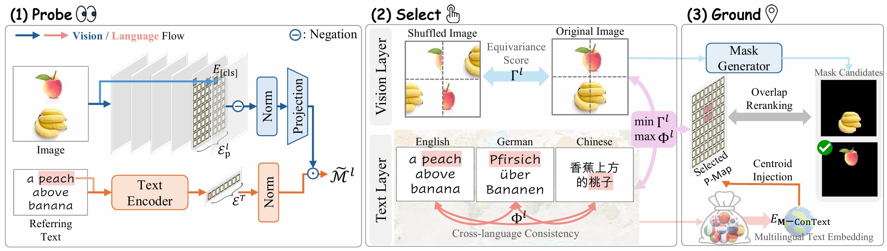
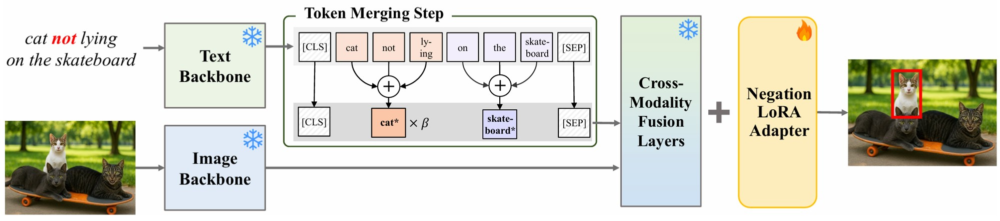
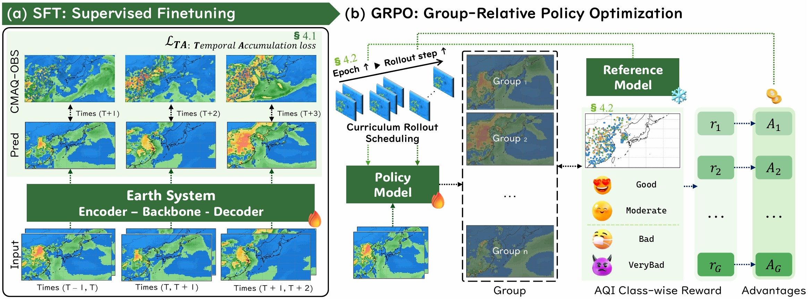
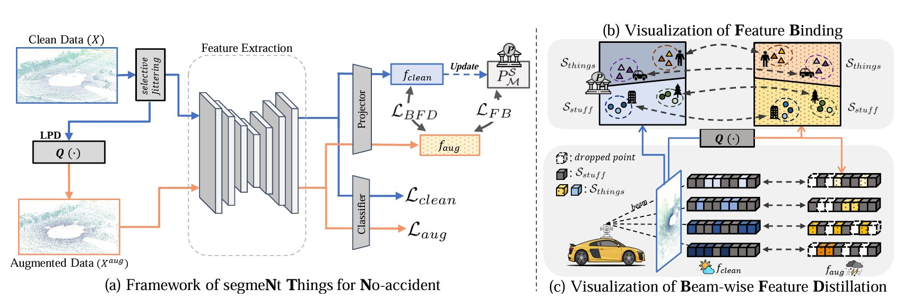
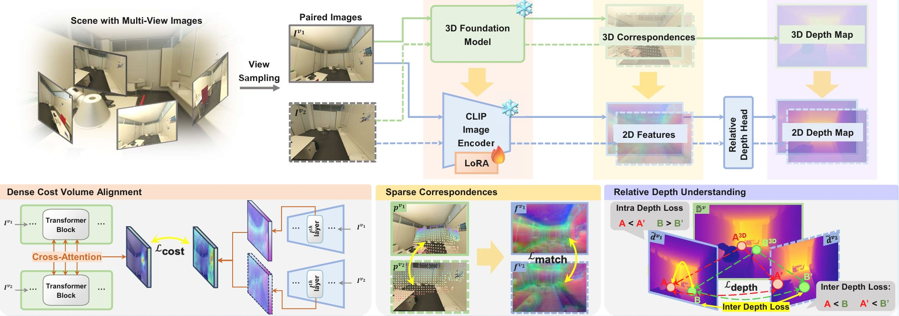
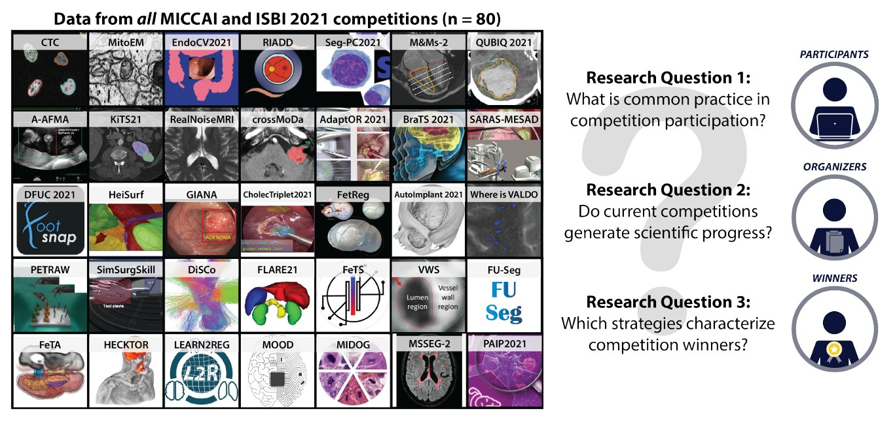
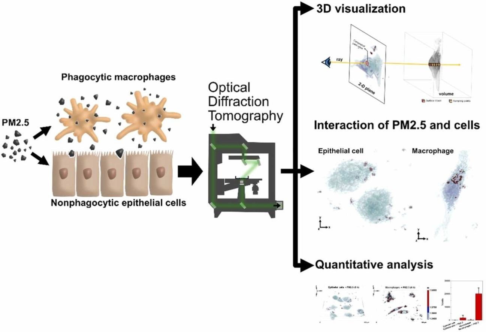
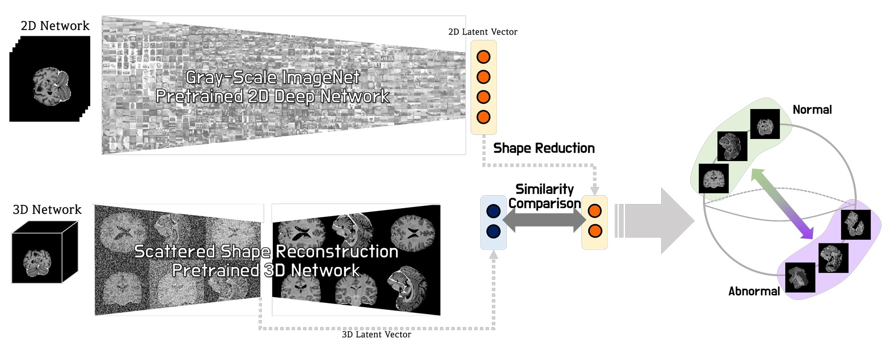
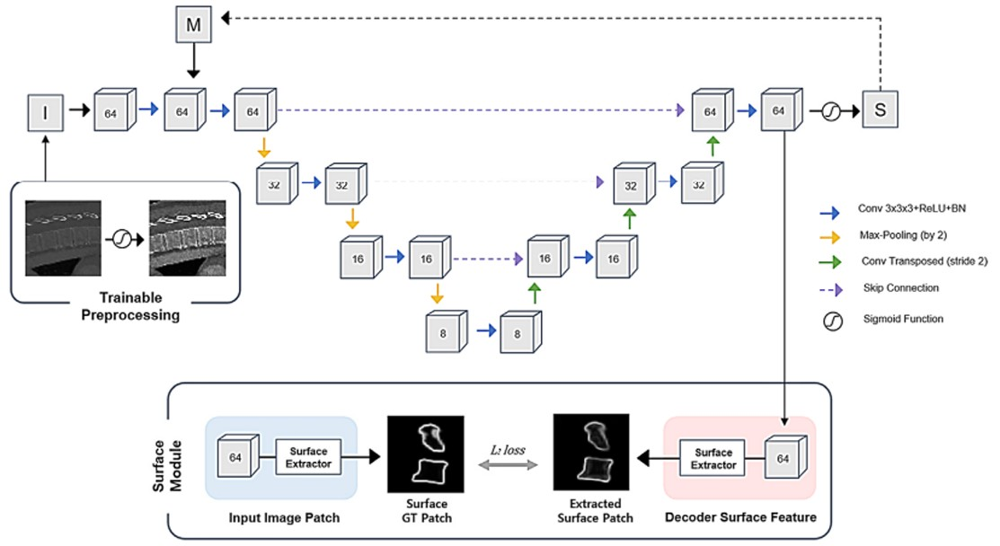
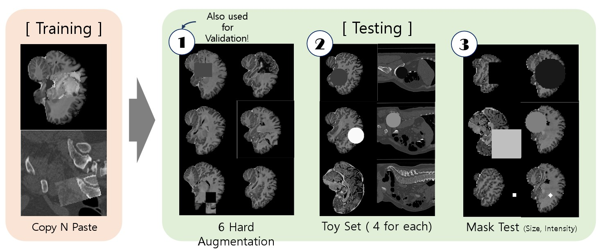

Publications and research outputs
Vision Language Model, Multimodal
Selected papers across vision-language models, multimodal learning, medical AI, robust perception, forecasting, and explainable systems. Use the search box or topic filters to browse the list quickly.
No publications matched your search.
Try a different keyword or a broader filter.
2026
3 papers
2026Blind to Position, Biased in Language: Probing Mid-Layer Representational Bias in Vision-Language Encoders for Zero-Shot Language-Grounded Spatial Understanding
Probes mid-layer vision-language representations to uncover positional blindness and language-dependent bias, improving zero-shot language-grounded spatial understanding.

2026What “Not” to Detect: Negation-Aware VLMs via Structured Reasoning and Token Merging
Identifies the affirmative bias of VLMs when processing negation and improves detection accuracy with a token-merging module and a reasoning-aware data pipeline.

2026Real-Time Long Horizon Air Quality Forecasting via Group-Relative Policy Optimization
CVPR 2026 Compute Transparency Champion
Applies GRPO with asymmetric rewards to reduce false alarms and deliver reliable five-day air quality forecasts for East Asia.
2025
2 papers
2025No Thing, Nothing: Highlighting Safety-Critical Classes for Robust LiDAR Semantic Segmentation in Adverse Weather
Addresses safety-critical failures in weather-degraded LiDAR by emphasizing object geometry through physics-inspired augmentation.

20253D-Aware Vision-Language Models Fine-Tuning with Geometric Distillation
Transfers structural knowledge from 3D models into 2D VLMs, improving zero-shot 3D classification without requiring large 3D datasets.
2023
2 papers
2023Why is the winner the best?
Studies the reliability of ranking systems in biomedical AI challenges and shows how unstable metrics can misrepresent performance differences.

2023Three-Dimensional Label-Free Visualization of the Interactions of PM2.5 with Macrophages and Epithelial Cells Using Optical Diffraction Tomography
Uses optical diffraction tomography for 3D, label-free visualization of fine dust uptake, enabling quantitative analysis without phototoxicity.
2022
2 papers
2022Joint Embedding of 2D and 3D Networks for Medical Image Anomaly Detection
Combines 2D texture cues and 3D volumetric context to detect subtle anomalies in brain MRI and abdominal CT, winning the MICCAI MOOD Challenge.

2022End-to-End Vertebra CT Image Segmentation Network with the 3D Surface-Enhanced Module and the Trainable Preprocessing Method
Integrates trainable preprocessing and 3D surface enhancement into an end-to-end segmentation network for vertebra CT analysis.
2021
1 paper
2021Self-Supervised 3D Out-of-Distribution Detection via Pseudoanomaly Generation
Introduces pseudoanomaly generation so 3D anomaly detectors can learn from normal data only, winning the MICCAI MOOD Challenge.